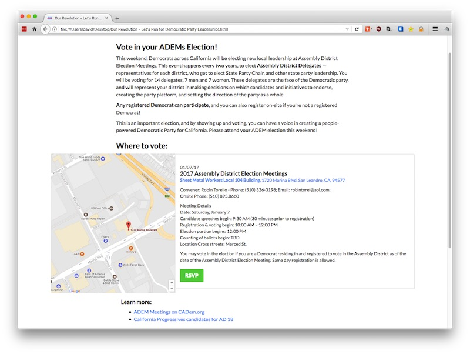
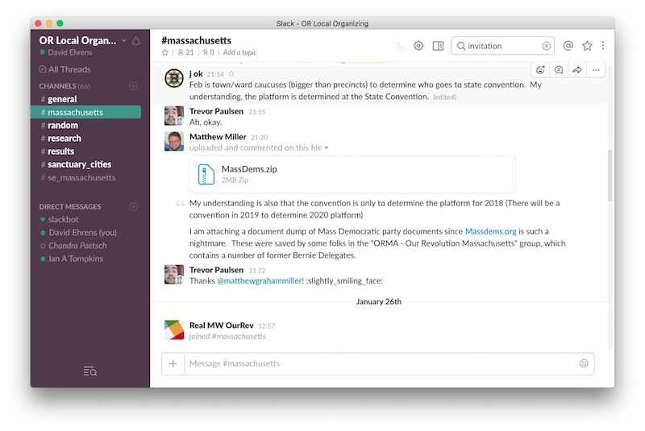

2017-01-30 08:00
We’ve had some big shocks lately, and people are spending a lot of time in a reactive mode – signing petitions, making phone calls, and attending rallies. As it should be. But the long game is to strengthen and democratize the Democratic Party and the progressive ecosystems in and around it.
But here in Massachusetts democracy is in big trouble. The state ranks last in competitiveness in political races, and in many districts Republicans and Democrats don’t even bother to field candidates. As an example, “Mexican Wall Slave Labor” sheriff Tom Hodgson ran unchallenged in Bristol County. In the 2016 Democratic Primary the party fielded uncontested candidates for U.S. Congress in all nine districts: there was not one challenger. Hand-picked candidates don’t give voters anything to really vote for.
And state government is almost as bad. Half the candidates for the Governor’s Council ran unchallenged. In County Sheriff Democratic primary elections, six out of fourteen ran unopposed and two slots were never filled. In almost half the state legislature primaries and in 29 out of 42 state senate races there was no challenger.
Democrats
The Democratic Party seems to run on auto-pilot in many towns, and very few people know who the pilot is.
Picking my own town as an example, the Dartmouth Democratic Town Committee is not listed with the state Democratic Party. It is not in their town and ward database, and the two massdems.org staffers I called and emailed were unable to tell me if such a committee even existed. Another Bernie guy, Warren Lynch, ready to jump into Democratic politics, couldn’t find his local committee on massdems.org either, so he put together his own directory. While anecdotal, this example illustrates a common complaint – that superdelegates and lack of competitiveness are the least of the Democratic Party’s problems. Participation in the party at a local level is hampered by disorganization and even secretiveness. By the way, I eventually found the Dartmouth Town Commitee in Lynch’s directory.
Independents and Third Parties
Those registered as Independents miss a chance to influence a political party – any party. No one knows what goes on in the sanctity of the voting booth, so you are free to vote for whomever you like on election day – even the other guys. But the other 364 days of the year – wield some influence! In Massachusetts you can re-register with one of several parties using a register-by-mail form. If you belong to a third party (Greens, Libertarians, United Independents, etc.) check the registration form. The state of Massachusetts seems to add and drop third parties. See this and this for illustrations. I assume there is some method to the madness, but it makes belonging to a third party even more difficult than it already is.
Progressives
Following Debbie Wasserman-Schultz, Clinton, and Trump – and taking their cue from the Tea Party – progressive Democrats, Greens, and Independents are about to start challenging uncontested candidates, “primarying” those who behave like Republicans, and offering slates of progressive candidates. In California, progressives recently took control of the state Democratic Party.
Our Revolution was founded by Bernie Sanders and its members are largely Democrats, Greens, Democratic Socialists, and members of progressive alliances. One of Our Revolution’s projects is trying to transform the Democratic Party by compiling a database of party chairs, contacts, and bylaws from local party organizations and encouraging Democrats to re-democratize and re-energize the party. Go to the bottom of this page and join. When the research is complete in every state, you will be able to type in your address and get a listing that shows you the when, what, where, why, and whos of your local party organization.

If you are interested in helping Our Revolution with this research – or simply want to see what these young-ish progressives are up to, sign up to join Our Revolution’s orlocalorganizing team and then install Slack on your desktop and/or mobile devices. The discussions and resources will tell you a lot about the kind of activists signing up. Their #general and #random channels are for general discussion. The #research channel is for those contributing party documents and contacts. Each state and territory has its own channel. The #massachusetts channel was created by O.R. and the #se_massachusetts channel was created by a local organization in Fall River:
